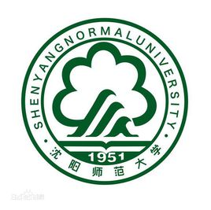
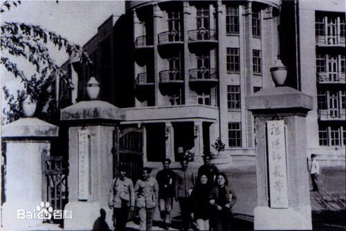
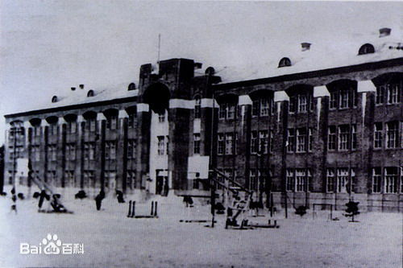

|
||||||||||
沈阳师范大学Shenyang Normal University沈阳师范大学（Shenyang Normal University），位于辽宁省沈阳市，由辽宁省人民政府举办并主管，[1] 入选教育部“卓越法律人才教育培养计划”、“卓越教师培养计划”，为教育部首批开展专业学位研究生教育综合改革试点高校，是一所涵盖哲学、经济学、法学、教育学、文学、理学、工学、管理学、艺术学等九大门类的多科性大学。 沈阳师范大学始建于1951年，其前身为东北教育学院，1953年更名为沈阳师范学院；1965年更名为辽宁第一师范学院；1978年恢复沈阳师范学院校名。2002年，沈阳师范学院与辽宁教育学院合并组建为沈阳师范大学。 据2017年8月学校官网信息显示，沈阳师范大学占地面积1840余亩，建筑面积64万余平方米，教学设备仪器总值2.4063亿元，馆藏图书218万余册；下设有二级学院26个、本科专业76个；有专任教师1545人，全日制本科生20000余人，硕士研究生3300余人，留学生1000余人。 |
 | |||||||||
|
||||||||||
历史前沿 |
||||||||||
|---|---|---|---|---|---|---|---|---|---|---|
| 合并前身 | ||||||||||
| 沈阳师范大学于2002年由沈阳师范学院与辽宁教育学院合并组建而成。 | ||||||||||
1951年3月，东北人民政府教育部决定创办东北教师学院，同年4月改称为东北教育学院。 1951年5月，东北人民政府教育部正式批准成立东北教育学院。 1953年5月，东北行政委员会教育局将辽东、辽西、沈阳等七所师范专科学校调整合并为三所院校，即东北教育学院、哈尔滨师范专科学校及大连师范专科学校。 1953年9月，东北教育学院更名为沈阳师范学院，郭沫若题写校名。 1965年10月，学校正式更名为辽宁第一师范学院。 1969年12月，省革委员会决定撤销锦州师范学院，并将该院的物理系、化学系调入辽宁第一师范学院，学院在此基础上组建了工业基础系和农业基础系。 1973年7月，学校组建辽宁第一师范学院锦州分院，并将物理、化学两个系掉回锦州，与原锦州师范学院旧部在旧址上建设了锦州分院。 1976年，辽宁第一师范学院迁回沈阳，恢复沈阳师范学院校名，学院隶属关系确定为省、市共管，以市管为主，同时决定将“辽宁第一师范学院”锦州分院改为锦州师范学院。 1982年，学校划归为辽宁省人民政府管理。 1984年，学校取得硕士学位授予权。[6] |
||||||||||
辽宁教育学院是在原辽宁省教育行政干部学校、辽宁函授学院和辽宁省教师进修学院以及辽宁省中小学教学研究室基础上组建而成的。原辽宁省教育行政干部学校创建于1956年3月，辽宁函授学院成立于1962年，辽宁省教师进修学院建立于1957年10月。 1951年5月，东北人民政府教育部正式批准成立东北教育学院。 1953年5月，东北行政委员会教育局将辽东、辽西、沈阳等七所师范专科学校调整合并为三所院校，即东北教育学院、哈尔滨师范专科学校及大连师范专科学校。 1953年9月，东北教育学院更名为沈阳师范学院，郭沫若题写校名。 1965年10月，学校正式更名为辽宁第一师范学院。 1969年12月，省革委员会决定撤销锦州师范学院，并将该院的物理系、化学系调入辽宁第一师范学院，学院在此基础上组建了工业基础系和农业基础系。 1973年7月，学校组建辽宁第一师范学院锦州分院，并将物理、化学两个系掉回锦州，与原锦州师范学院旧部在旧址上建设了锦州分院。 1976年，辽宁第一师范学院迁回沈阳，恢复沈阳师范学院校名，学院隶属关系确定为省、市共管，以市管为主，同时决定将“辽宁第一师范学院”锦州分院改为锦州师范学院。 1982年，学校划归为辽宁省人民政府管理。 1984年，学校取得硕士学位授予权。 |
||||||||||

|
||||||||||
| 班级： | 软件学院14班 |
|---|---|
| 姓名： | 软件学院14班 |